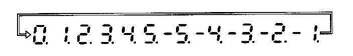
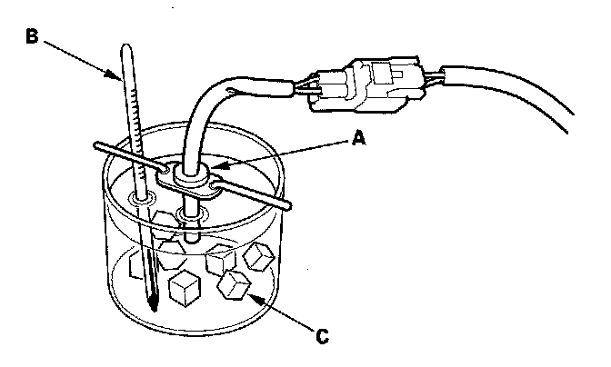

Outside Temperature Display: Adjustments
Outside Air Temperature Indicator CalibrationDescription
The outside temperature sensor is located behind the center of the front bumper. The gauge control module (tach) uses measurements from this sensor to display the outside air temperature.
Because of the location of the sensor, it may be affected by heat reflection from the road, engine and radiator heat or hot exhaust from surrounding traffic.
These conditions can heat soak the outside air temperature sensor and cause inaccurate readings. Logic has been written into the gauge control module (tach) to help prevent abnormal or fluctuating outside air temperature indicator readings.
Outside Air Temperature Indicator Logic
Initial outside air temperature indication after the ignition switch is turned ON (II).
- If the engine coolant temperature is 140° F (60° C) or higher when the ignition switch is turned ON (II), the outside air temperature indicated the last time the key was turned off will be displayed regardless of the current temperature measured by the outside air temperature sensor.
- If the engine coolant temperature is 139° F (59° C) or lower when the ignition switch is turned ON (II), the current temperature measured by the outside air temperature sensor will be indicated.
Update to the outside air temperature indicator while driving
If the temperature measured by the outside air temperature sensor is greater than the temperature on the outside air temperature indicator, the outside temperature indicator will increase by 1.8° F (1° C) per minute after the vehicle speed is greater than 19 mph (30 km/h) for more than 1 minute and 30 seconds. It will continue to increase until the current outside air temperature is indicated. So, the first change to the outside air temperature indicator is 1 minute and 30 seconds after the vehicle speed is greater than 19 mph (30 km/h), If the vehicle speed drops below 19 mph (30 km/h), the indicator will not update again until the vehicle speed is increased to 19 mph (30 km/h) or more for more than 1 minute and 30 seconds again. If the outside air temperature is less than the indicated temperature, the temperature will decrease 1° F every 1.1 second (1° C every seconds) until the current outside air temperature is indicated regardless of vehicle speed.
Troubleshooting
If the indicator displays "---" for more than 2 seconds after selecting the outside air temperature display mode, check the outside air temperature sensor, or gauge control module self-diagnosis.
Calibration
The outside air temperature indicator's displayed temperature can be recalibrated ±5° F (or ±3° C) to meet the customer's expectations.
1. Turn the ignition switch ON (II).
2. Select the outside air temperature display.

3. Press and hold the SEL/RESET switch until the trip meter resets, then release it. Press, and continue to hold, the switch again, and the display will scroll through temperature settings from +5° F to -5° F (or +3° C to -3° C) as shown.
4. When the desired correction value appears on the display, release the button, and the recalibrated outside air temperature will be displayed.
Example:
Incorrect value = 68° F (20° C)
Desired correction value = +2° F (+1° C)
Correct valve = 70° F (21° C)
Desired correction value = -2° F (-1° C)
Correct valve = 66° F (19° C)
NOTE: The recalibration temperature is not the value the sensor sees. Therefore the temperature can only be adjusted ±5 degrees from the sensor.

NOTE: To recalibrate the display to the true temperature, remove the outside air temperature sensor (A), but leave it connected. Submerge the sensor and a thermometer (B) in a container of ice water (C). Select the calibration mode as described above, then recalibrate the display to the true temperature.